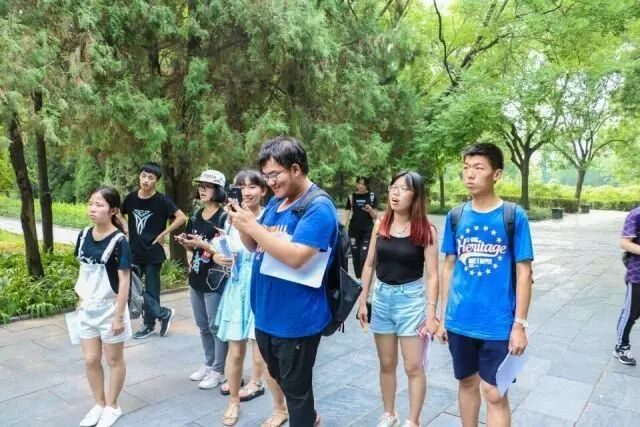
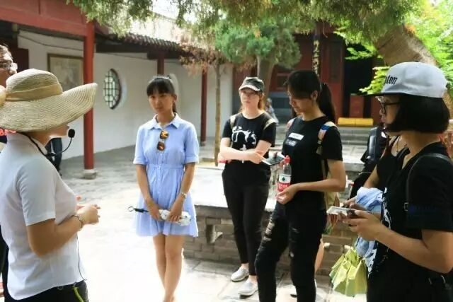
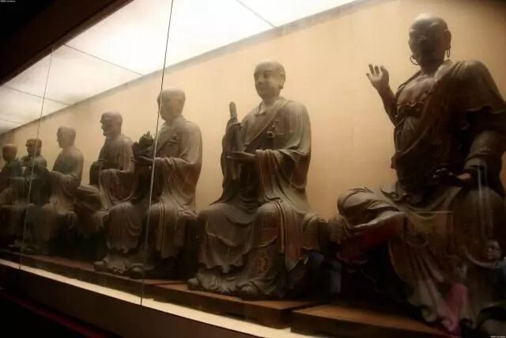
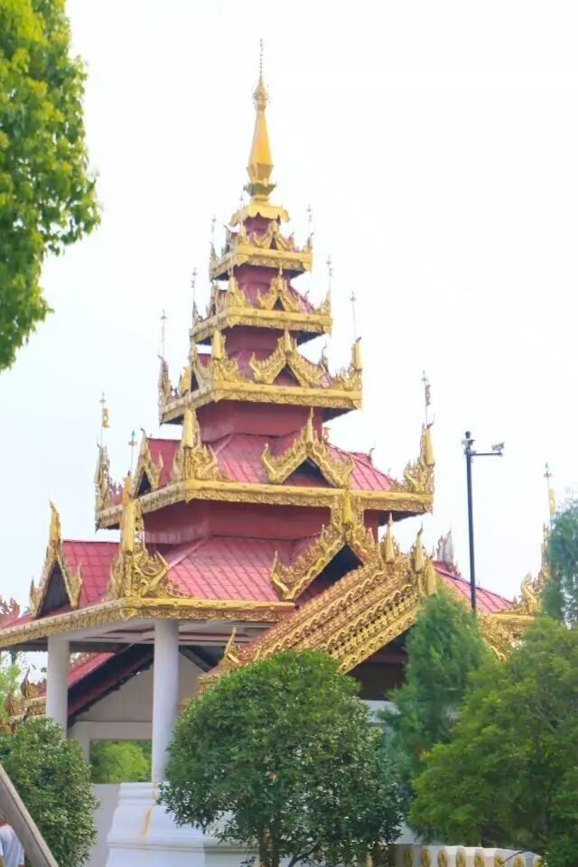
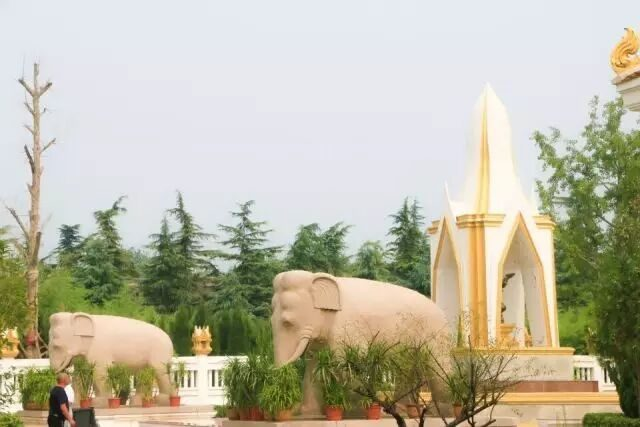
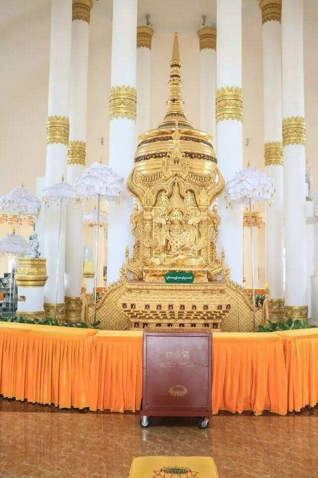
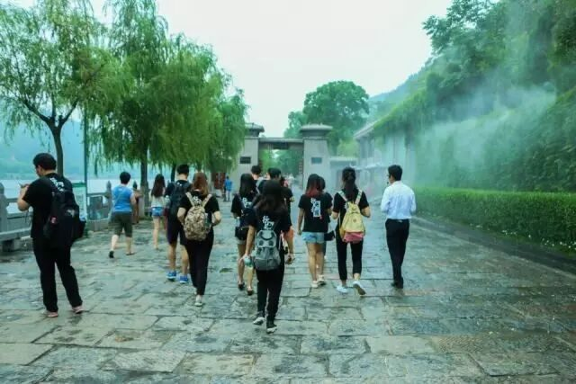
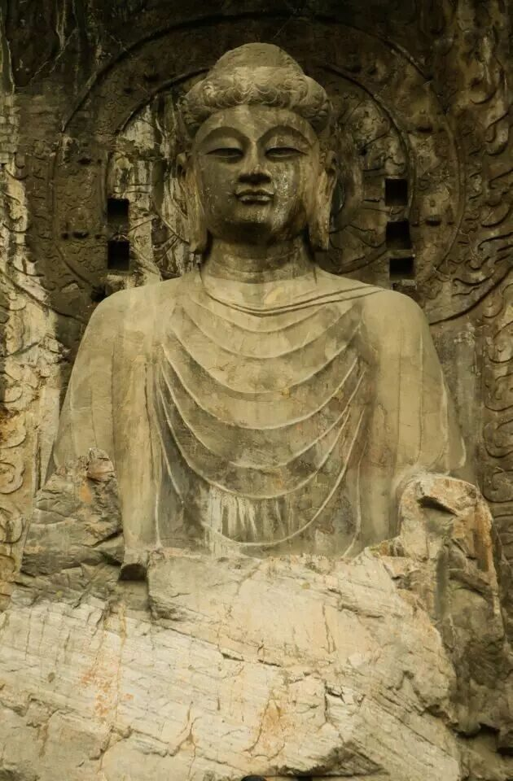
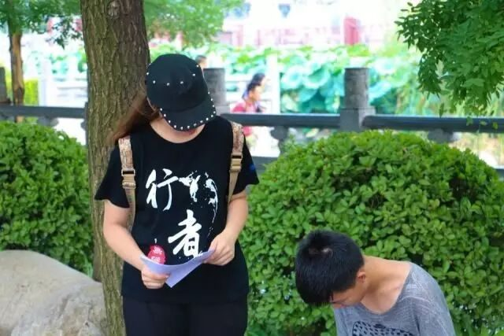

行者无疆#尾声#——洛阳行

行者无疆
洛阳行
若
问
古
今
兴
废
事
，
请
君
只
看
洛
阳
城
。

白马寺
中州原善土，
白马驮经来。
Begin
中国第一古刹
白马寺地处洛阳外沿的一座村落，寺内气氛庄严肃穆，寺外小贩叫卖声朗朗。寺庙本身就像是一位隐世的高人，清心寡欲，落落出尘。怀着一颗虔诚的心，我们轻轻地踏入了这方净土。


行进中……

1).白马寺历史悠久，向来是信佛者的朝圣之地。

2).寺内佛像众多，形态各异，代表了古代工匠高超的技术水平，同时也具有极高的审美价值。元代“夹纻干漆”手法造像——三世佛、二天将、十八罗汉是国内仅存于此，同时也是白马寺的镇寺之宝。历经几世变迁，佛像仍然保存完好，栩栩如生。更让人惊奇的是，这些一人多高的佛像，每个重量只有八斤左右，最薄处仅有一元硬币厚，是古人用纻麻、篾条、金粉等制造的，堪称巧夺天工。可惜手艺至明时已失传。

3).白马寺景区内除了白马寺，还有21世纪初泰国、缅甸、印度政府出资建造的具有本国特色的佛门寺院。这些寺院展现出佛门的遍地生莲，根本相同而枝叶各异，各怀其美。



终点站
龙门石窟
最后一站
千年道场数龙门，
造像剥蚀岁月深。
绝壁雕成龛窟洞，
铭文荟萃魏碑林。
远瞻八丈仰天佛，
近察三分罗汉群。
伊水湍湍山脚下，
洛阳处处满游人。

在雕刻艺术方面，自古及今，龙门石窟的地位都是不可撼动的。佛像依山而建，掩藏在青山绿水中，千百年来默默地注视着世间。

佛无言，人自鉴。
行者无疆
终点
最后一站以对龙门石窟佛教文化的礼遇和探索作结尾。自汉至今，佛教对于中国，举足轻重。佛法但欲普度众生，佛教劝人积极行善。
我们未必要做信教徒，但必须心怀至诚。我们未必要献花礼佛，但必须心存敬畏。佛无言，人自鉴，举头三尺处，是非自断。
P.S.调研过程中发问卷的我们~

责编丨王梓腾
文字丨陈沫如
摄影丨岳浩然 张熹玮
审核丨章静 彭博
行
者
无疆实践团

扫描二维码关注行者酱
QQ号：2758025831
来源：行者无疆实践团